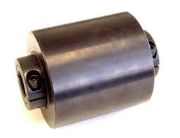
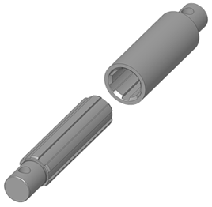

Sesión 9
Un eje es un elemento, normalmente cilíndrico, que gira sobre si mismo y sirve para sostener diferentes piezas.
Un árbol es un elemento, cilíndrico o no, sobre el que se montan diferentes piezas mecánicas (por ejemplo, un conjunto de engranajes o poleas) a los que se transmite potencia. Pueden tener diferentes formas (rectos, acodados, flexibles, etc). Los árboles giran siempre junto con los órganos soportados. Como consecuencia de su función, están sometidos fundamentalmente a esfuerzos de torsión y flexión.
La diferencia esencial entre los ejes y los árboles es la siguiente:
- los ejes son elementos que solo sostienen los órganos giratorios de las máquinas y no transmiten potencia. Por lo tanto, no están sometidos a esfuerzos de torsión.
- los árboles son elementos que transmiten potencia y sí están sometidos a esfuerzos de torsión.
Un acoplamiento es un dispositivo que se utiliza para unir dos árboles en sus extremos con el fin de transmitir potencia.
Los acoplamientos pueden ser rígidos (si no permiten movimientos relativos entre los árboles a acoplar) o móviles.
Acoplamientos rígidos
Estos acoplamientos unen rígidamente los árboles y transmiten el movimiento de giro sin permitir que haya movimientos relativos. La unión se comportaría prácticamente igual que si los árboles estuvieran soldados entre sí, pero con la ventaja de poder desmontarse y separarlos sin tener que romperlos.
Estos acoplamientos son rígidos a torsión y flexión, por lo que sólo se recomiendan para la unión de árboles bien alineados, y del mismo diámetro. Su capacidad de transmisión de par es elevada y son de fácil instalación, sin embargo, no son aptos para transmitir movimiento variable.
Los principales acoplamientos rígidos son:
Bridas
Constan de dos piezas (llamadas bridas), soldadas sobre los extremos de los árboles a unir o fabricadas de una sola pieza con los árboles en el caso de transmisiones de elevadas potencias. Estas bridas están perforadas para poder unirse mediante pernos.
Se utilizan en árboles de igual o diferente diámetro, y el acoplamiento se efectúa mediante tornillos y tuercas, para que sea fácilmente desmontable.

Manguitos
Constan de una pieza cilíndrica, de acero o fundición que asienta en los extremos de los árboles y de unos pasadores cónicos que fijan el manguito al árbol.

A los manguitos de una sola pieza se les llama también "manguito enterizo" y tienen el inconveniente de que es necesario desmontar los árboles para montarlo. Existe otra variedad que permite realizar y modificar el acoplamiento sin necesidad de desmontar la máquina y son los llamados "manguito partido". Éstos se fabrican en dos piezas unidas entre sí por tornillos o pasadores, entre las cuales se comprimen los dos extremos de los árboles.

En diámetros pequeños, la transmisión se produce por rozamiento entre árboles y manguito, pero en acoplamientos mayores, se introducen chavetas para asegurar dicha transmisión.
Acoplamientos móviles
Los más importantes son los siguientes:
Junta elástica
Se trata de un acoplamiento elástico, generalmente de caucho, goma o neopreno, que absorbe pequeñas irregularidades de giro y permite una desalineación entre ejes de hasta unos 20º-30º en casos extremos.

Junta cardán
La junta cardán o junta universal se utiliza para transmitir movimiento entre dos árboles no alineados. En los extremos de lo árboles se colocan dos horquillas que se unen mediante una pieza en forma de cruceta.

Debido a las oscilaciones que producen este tipo del juntas, suelen colocarse dos en el mismo árbol.
Junta homocinética
Realizan el mismo tipo de acoplamiento que las juntas cardán, pero no producen oscilacionesentre los árboles que se transmite el giro, lo que las hace especialmente adecuadas en el sector de la automoción, para transmitir el movimiento a las ruedas de los vehículos.

En el siguiente vídeo puedes ver con más detalle el funcionamiento de las juntas cardán y las juntas homocinéticas:
Junta Oldham
Se utiliza para acoplar árboles que tengan la misma dirección (paralelos) pero que no sean concéntricossino que están separados por una pequeña distancia. En esta animación puedes ver como funciona:

Eje estriado
Es un tipo de acoplamiento que permite que el árbol pueda variar su longitud. También se conoce con el nombre de manguito deslizante.

Relaciona
Cada tarjeta describe cómo están colocados los dos árboles que hay que unir. Relaciona cada situación con el acoplamiento que la resuelve. Fíjate en la geometría —si están alineados, si se cortan, si son paralelos— porque es lo único que decide.
Cada tarjeta describe cómo están colocados los dos árboles que hay que unir. Relaciona cada situación con el acoplamiento que la resuelve. Fíjate en la geometría —si están alineados, si se cortan, si son paralelos— porque es lo único que decide.
", "showMinimize": false, "itinerary": {"showClue": false, "clueGame": "", "percentageClue": 40, "showCodeAccess": false, "codeAccess": "", "messageCodeAccess": ""}, "cardsGame": [{"url": "", "x": 0, "y": 0, "author": "", "alt": "", "audio": "", "color": "#000000", "backcolor": "#ffffff", "eText": "Dos%20%C3%A1rboles%20perfectamente%20alineados%20y%20del%20mismo%20di%C3%A1metro%2C%20que%20hay%20que%20poder%20separar%20sin%20cortarlos", "urlBk": "", "xBk": 0, "yBk": 0, "authorBk": "", "altBk": "", "audioBk": "", "colorBk": "#000000", "backcolorBk": "#ffffff", "eTextBk": "Acoplamiento%20r%C3%ADgido%20de%20bridas%20atornilladas"}, {"url": "", "x": 0, "y": 0, "author": "", "alt": "", "audio": "", "color": "#000000", "backcolor": "#ffffff", "eText": "Dos%20%C3%A1rboles%20alineados%20cuyo%20acoplamiento%20hay%20que%20poder%20montar%20y%20modificar%20sin%20desmontar%20la%20m%C3%A1quina", "urlBk": "", "xBk": 0, "yBk": 0, "authorBk": "", "altBk": "", "audioBk": "", "colorBk": "#000000", "backcolorBk": "#ffffff", "eTextBk": "Manguito%20partido"}, {"url": "", "x": 0, "y": 0, "author": "", "alt": "", "audio": "", "color": "#000000", "backcolor": "#ffffff", "eText": "Dos%20%C3%A1rboles%20no%20alineados%2C%20cuyas%20prolongaciones%20se%20cortan%20formando%20un%20%C3%A1ngulo", "urlBk": "", "xBk": 0, "yBk": 0, "authorBk": "", "altBk": "", "audioBk": "", "colorBk": "#000000", "backcolorBk": "#ffffff", "eTextBk": "Junta%20card%C3%A1n%2C%20montada%20por%20parejas%20para%20compensar%20las%20oscilaciones"}, {"url": "", "x": 0, "y": 0, "author": "", "alt": "", "audio": "", "color": "#000000", "backcolor": "#ffffff", "eText": "El%20%C3%A1rbol%20que%20mueve%20la%20rueda%20de%20un%20coche%2C%20que%20no%20puede%20transmitir%20oscilaciones%20de%20velocidad", "urlBk": "", "xBk": 0, "yBk": 0, "authorBk": "", "altBk": "", "audioBk": "", "colorBk": "#000000", "backcolorBk": "#ffffff", "eTextBk": "Junta%20homocin%C3%A9tica"}, {"url": "", "x": 0, "y": 0, "author": "", "alt": "", "audio": "", "color": "#000000", "backcolor": "#ffffff", "eText": "Dos%20%C3%A1rboles%20paralelos%20separados%20una%20peque%C3%B1a%20distancia%2C%20sin%20llegar%20a%20estar%20en%20la%20misma%20l%C3%ADnea", "urlBk": "", "xBk": 0, "yBk": 0, "authorBk": "", "altBk": "", "audioBk": "", "colorBk": "#000000", "backcolorBk": "#ffffff", "eTextBk": "Junta%20Oldham"}, {"url": "", "x": 0, "y": 0, "author": "", "alt": "", "audio": "", "color": "#000000", "backcolor": "#ffffff", "eText": "Un%20%C3%A1rbol%20que%20tiene%20que%20poder%20cambiar%20de%20longitud%20mientras%20gira", "urlBk": "", "xBk": 0, "yBk": 0, "authorBk": "", "altBk": "", "audioBk": "", "colorBk": "#000000", "backcolorBk": "#ffffff", "eTextBk": "Eje%20estriado%20o%20manguito%20deslizante"}, {"url": "", "x": 0, "y": 0, "author": "", "alt": "", "audio": "", "color": "#000000", "backcolor": "#ffffff", "eText": "Una%20uni%C3%B3n%20que%20absorba%20peque%C3%B1as%20irregularidades%20de%20giro%20y%20unos%20grados%20de%20desalineaci%C3%B3n", "urlBk": "", "xBk": 0, "yBk": 0, "authorBk": "", "altBk": "", "audioBk": "", "colorBk": "#000000", "backcolorBk": "#ffffff", "eTextBk": "Junta%20el%C3%A1stica%20de%20caucho"}], "isScorm": 0, "textButtonScorm": "Guardar la puntuación", "repeatActivity": true, "weighted": 100, "textAfter": "", "version": 2, "percentajeCards": 100, "type": 0, "showSolution": true, "timeShowSolution": 3, "time": 3, "evaluation": false, "evaluationID": "f96bc37c-5aaf-40e4-af65-a544218a46a6", "id": "idevice-1786814181523-vjwu1sc03", "msgs": {"msgSubmit": "Enviar", "msgClue": "¡Genial! La pista es:", "msgCodeAccess": "Código de acceso", "msgPlayStart": "Pulsa aquí para jugar", "msgScore": "Puntuación", "msgErrors": "Errores", "msgHits": "Aciertos", "msgMinimize": "Minimizar", "msgMaximize": "Maximizar", "msgFullScreen": "Pantalla Completa", "msgExitFullScreen": "Salir del modo pantalla completa", "msgNoImage": "Pregunta sin imágenes", "msgEndGameScore": "Comience la partida antes de guardar la puntuación.", "msgScoreScorm": "La puntuación no se puede guardar porque esta página no forma parte de un paquete SCORM.", "msgOnlySaveScore": "¡Solo puede guardar la puntuación una vez!", "msgOnlySave": "Solo puede guardar una vez", "msgInformation": "Información", "msgYouScore": "Su puntuación", "msgAuthor": "Autoría", "msgOnlySaveAuto": "Su puntuación se guardará después de cada pregunta. Solo puede jugar una vez.", "msgSaveAuto": "Su puntuación se guardará automáticamente después de cada pregunta.", "msgSeveralScore": "Puede guardar la puntuación tantas veces como quiera", "msgYouLastScore": "La última puntuación guardada es", "msgActityComply": "Ya ha realizado esta actividad.", "msgPlaySeveralTimes": "Puede realizar esta actividad cuantas veces quiera", "msgClose": "Cerrar", "msgAudio": "Audio", "msgNumQuestions": "Número de tarjetas", "msgTryAgain": "Necesitas al menos %s% de respuestas correctas para obtener la información. Inténtalo de nuevo.", "msgEndGameM": "Has completado el juego. Tu puntuación es %s.", "msgUncompletedActivity": "Actividad no completada", "msgSuccessfulActivity": "Actividad superada. Puntuación: %s", "msgUnsuccessfulActivity": "Actividad no superada. Puntuación: %s", "msgTypeGame": "Relaciona", "msgCheck": "Comprobar", "msgRestart": "Reiniciar"}}